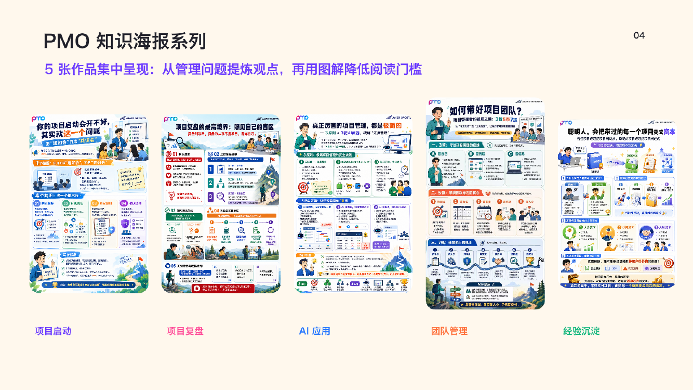
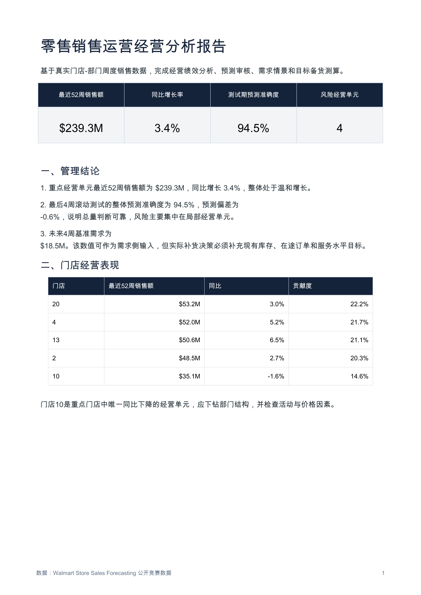
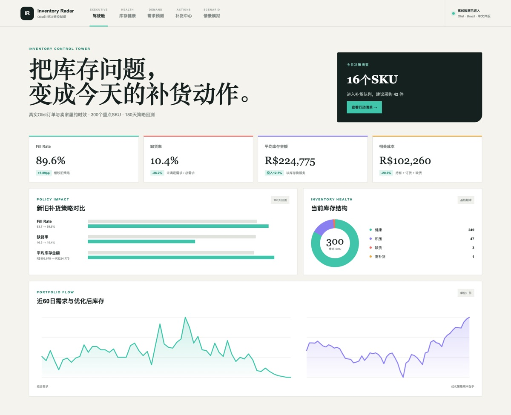
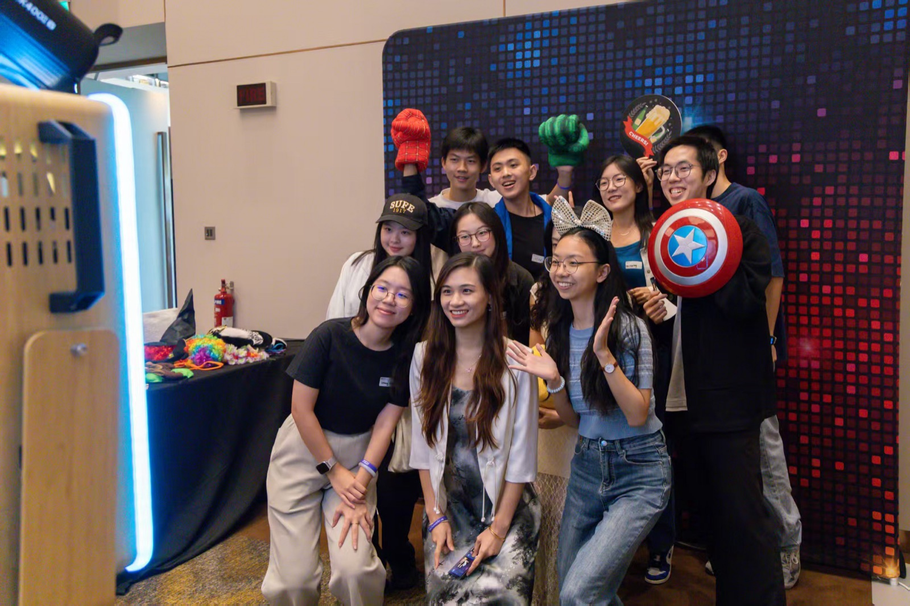

我本科专业会计、研究生转向统计，习惯用两种视角看问题——既懂账本里的细节，也看得懂数据背后的业务。
比起把事情做对，我更在意把事情做顺：梳理流程、打通协作、用工具把重复劳动自动化。工作之外，我认真生活、也认真玩。
从一堆杂乱的数据和流程里，找到那个真正关键的问题。
不止会分析，更擅长把想法变成能跑起来、能复用的方案。
让不同团队朝同一个目标走，把"扯皮"变成"协同"。
学得快、适应强，愿意在新赛道上从零开始积累。
统计学硕士 · 理学院 · 新加坡
QS世界排名前10院校
会计学（会计与财务实验班）· 本科 · 会计学院 · 上海
211工程院校

公众号 · 短视频 · 知识海报 · 线下活动
围绕用户需求完成选题、内容表达、活动招募与现场执行；将现场素材沉淀为持续传播内容，并用阅读表现与用户反馈推动下一轮优化。

Walmart 42.2万条销售记录分析
基于Walmart 42.2万条门店-部门周度销售记录，完成数据质量检查，建立经营指标体系。采用滚动审核方式对比三类预测方法，测试期预测准确度达94.5%。

Olist 10万笔电商订单分析
基于300个重点SKU完成需求分析、ABC/XYZ分类及28天需求预测。结合履约时效和安全库存，建立自动补货模型并输出SKU级补货建议。

2025.08 - 至今
活动策划：对接校方行政、企业嘉宾与研究生群体，调研学生求职痛点，完成 20+ 场职业分享、校友沙龙活动前期策划、嘉宾邀约与资源协调工作，锚定活动选题方向
社群运营：负责活动宣传推广、现场统筹、复盘迭代全流程，累计触达 5000+ 在校研究生；收集学生反馈持续迭代活动形式，提升社群活跃度，锤炼多方协同与大型活动风险预判能力
2023.09 - 2025.06
活动统筹：主导 20+ 场徒步、团建活动落地，完成线路勘察、预算核算、人员分工与应急预案制定，把控现场执行与安全保障，服务社团 200+ 成员，保障活动安全有序开展
内容增流：运营公众号、小红书新媒体账号，独立完成选题、文案撰写与发布，产出活动纪实、户外攻略内容，推文平均阅读 3000+，带动粉丝增长 20%，扩大社团影响力
如果你对我的经历感兴趣，欢迎随时找我聊聊！🙌